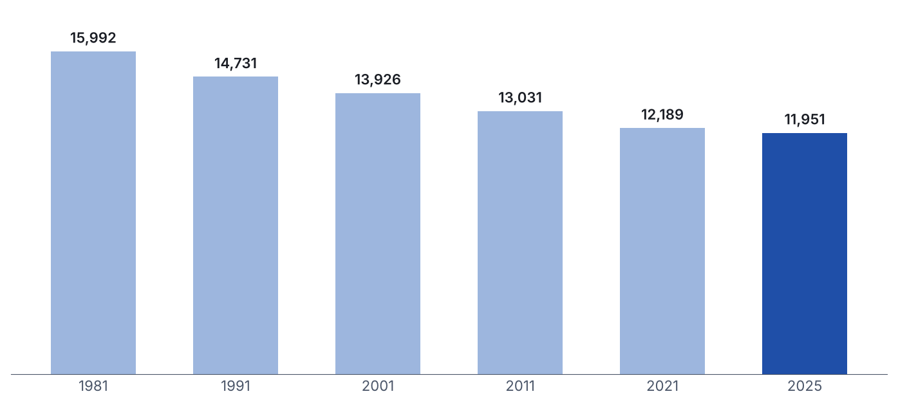
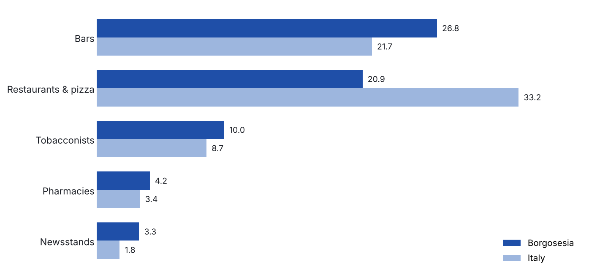

The challenge
In December 2020 I mapped Borgosesia (Vercelli, Piedmont) by hand: an estimated 12,500 residents, 8,000 in the centre and 4,500 in the neighbourhoods (rioni) and outlying hamlets (frazioni), and 85 local outlets across six categories: bars, restaurants, pizza places, tobacconists, pharmacies and newsstands.
The question for this update: which of those numbers survive once they are replaced with official data, and what do they say when set against the Italian average?
The solution
Four steps from estimate to evidence:
What the analysis covers


Results
- The population estimate was close: 12,500 guessed against 12,250 recorded at the end of 2020. Today it is 11,951, a quarter fewer than in 1981
- 31.2% of residents are 65 or older (2023), against 25.1% in Italy (2026)
- Definitions changed the answer: ISTAT places 84% of residents in the built-up town centre (centro abitato), not the 64% estimated, because it counts the neighbourhoods joined to the town as part of it
- 24% more bars, 22% more pharmacies and 84% more newsstands per resident than the Italian average, but 22% fewer restaurants and pizzerias
- Next step: geocode every outlet and assign it to ISTAT census sections for true centre and hamlet ratios
Stack
This is a demo project on public data (ISTAT, InfoCamere/FIPE, Federfarma, SNAG, FIT). Outlet counts come from my own field count of December 2020, with pharmacies re-checked in November 2026. National figures count registered businesses rather than shop fronts, so the comparison is indicative.